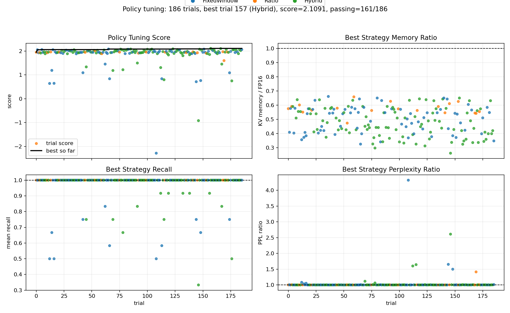

What worked
The quantizer and cache passthrough sanity checks now pass. The validation notebook completed without errors, and all quantized policies delivered real KV-cache memory reductions.
Experiment summary from tuning and long-context validation
We compared a full BF16/FP16 KV cache against three tiered quantization policies: FixedWindow, Ratio, and Hybrid. The best observed configuration cut KV cache memory to 29 percent of baseline, but accuracy and perplexity regressed enough that the current implementation should be read as an exploration of policy behavior, not as a final performance result.
The quantizer and cache passthrough sanity checks now pass. The validation notebook completed without errors, and all quantized policies delivered real KV-cache memory reductions.
The best quantized policies were slower than baseline in this implementation, and recall/perplexity degradation was too large for a positive benchmark claim.
Novelty is unlikely to be basic KV quantization. The more plausible contribution is a dynamic policy that allocates precision better than flat FP8/INT8/INT4 under a fixed memory budget.
Use the controls to walk through the baseline and the three dynamic quantization policies. The small cache lane is an intuition diagram, not a physical memory layout.
The first stable configuration proved that the benchmark and quantizer could run end to end, but memory savings were modest.
Removing aggressive INT2 pressure made the policies much less brittle and allowed all three quantized strategies to pass local correctness checks.
FixedWindow became a reliable baseline because it protects recent tokens, which dominate normal autoregressive continuation.
Hybrid tuning gave the best balance in local search by combining sink preservation, recent high precision, and larger low-precision buckets for old tokens.
Tuning improved the memory-quality tradeoff, but the final validation still showed that compression alone is not enough if quality and decode speed regress.
The latest available validation used Qwen/Qwen2.5-7B-Instruct with the tuned mixed-precision policy configuration. These numbers are useful for understanding tradeoffs, not for claiming a production speedup.

The tuned score improved from 1.947 to 2.109. The improvement mostly came from avoiding overly aggressive low-bit assignments while preserving enough recent and sink tokens.
The implementation asks a simple question: can we spend high precision on the KV entries that matter most, while storing less important entries with fewer bits? The tradeoff is between memory saved and reconstruction error introduced into attention.
The cache stores K and V for previous tokens. During decoding, the new query Q compares itself against all cached keys, then uses the resulting weights to mix cached values. If quantization changes K, it changes the attention logits before softmax. If it changes V, it changes the vector retrieved after softmax.
This is why key error can be more unstable than value error. A small key perturbation can change which token wins attention, especially when two tokens have similar scores. Value error is usually more linear: once attention weights are chosen, the model mixes a slightly distorted value vector.
A b-bit quantizer has only 2^b representable levels inside each group. INT8 has 256 levels, INT4 has 16 levels, and INT2 has only 4 levels. Lower bits save memory, but the interval between representable values gets wider, so x_hat moves farther from x.
Estimated from the validation run: BF16 KV cache used 917.5 MB at 16K tokens for Qwen2.5-7B.
FixedWindow defines precision by token age. A small set of sink tokens stays high precision, the newest tokens stay high precision, and older tokens move into lower-bit storage. In simplified form:
This worked reasonably well because most generation depends heavily on recent context. It struggles when the task requires exact retrieval from an older region that has already been pushed into low precision.
Ratio assigns a percentage of the current sequence to each precision tier. The boundaries move as the context grows:
The advantage is that memory usage scales predictably. The weakness is that percentages do not know whether an old token is important. A token can become low precision simply because the sequence grew, not because it became irrelevant.
Hybrid combines explicit sink protection, a short high-precision recent window, and geometric buckets for older context:
This gives the policy a useful bias: spend precision densely near the current token, keep a few stable anchor tokens, and let older regions become cheaper in larger chunks. It gave the best memory and NIAH behavior in the available validation, but its perplexity still degraded too much.
Ignoring scale and offset overhead, BF16 stores each KV element in 16 bits. INT8 is half that, INT4 is one quarter, and INT2 is one eighth. With group quantization, each group also stores metadata:
This is why the observed memory ratios are not exactly 0.5, 0.25, or 0.125. Metadata and the remaining high-precision windows matter.
Attention is selective. Compressing a token that receives almost no attention may have no visible effect. Compressing the one token needed for retrieval can completely flip an answer. That is why dynamic policies are attractive: the goal is not simply "use fewer bits"; it is "spend bits where the model is most likely to look."
Several parts of the idea are already known. The open opportunity is narrower: dynamic precision allocation that beats flat quantized KV cache under realistic fused-attention serving.
Preserving recent tokens and attention sinks overlaps with StreamingLLM. Retaining important long-context tokens overlaps with H2O and Scissorhands. Allocating cache differently across layers overlaps with PyramidKV.
KIVI, KVQuant, and related methods show that low-bit KV cache can preserve quality if the quantizer is carefully designed around KV distributions, outliers, keys versus values, and RoPE.
A pure Python or notebook-level dequantization path should not be expected to win speed. Production systems either dequantize inside the attention kernel or perform attention in a low-precision domain.
The strongest remaining paper direction is not "we quantized KV cache." It is: under the same fused backend and memory budget, can dynamic mixed precision choose which tokens, layers, or heads deserve more bits better than flat FP8/INT8/INT4?
| Claim | Status after this experiment |
|---|---|
| KV quantization saves memory | Confirmed in validation, but already known in the literature. |
| Dynamic precision can preserve quality | Promising in tuning, but not yet stable enough on harder validation. |
| Current notebook is faster | No. It is slower than the full-precision baseline. |
| Most defensible framing | Dynamic tier selection is the interesting part, not the existence of KV quantization itself. |